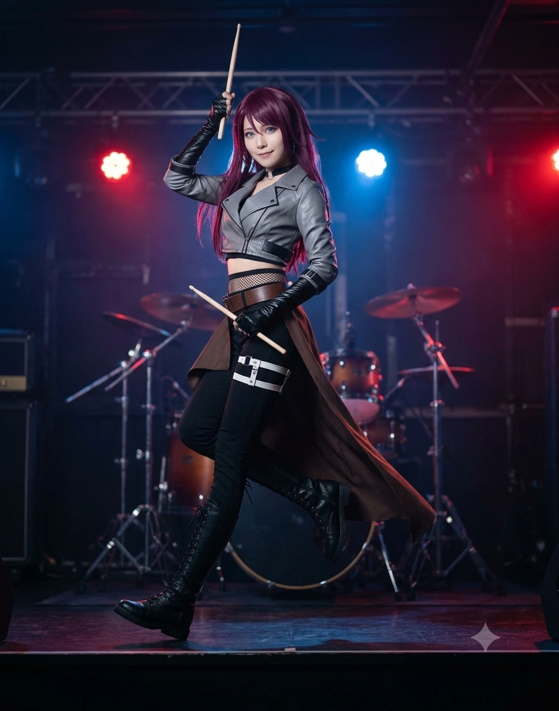

1. 개요
"소이소이소이소이소이! 소이야(ソイヤっ)―!! 자, 우전천에 모인 락커 여러분, 스틱을 쥐었으면 기합부터 제대로 넣자고! 오늘도 최고의 음악을 연주해 보이겠어!"
"하아...... 밖에서는 호랑이 원장님 소리 듣는 나도, 우리 막내동생 아연(아코)이의 눈물 앞에서는 꼼짝도 못 한단 말이지. ...아, 그리고 연습 끝났으니까 다 같이 돈코츠 쇼유 라멘 먹으러 가자! 거절은 안 받아~!"
효빈광역시 청엽구에 위치한 인구 10만 명의 거대 택지지구이자 '락(Rock)의 성지'인 우전동(宇田洞)이 낳은 영원한 큰언니이자, 5인조 소꿉친구 록 밴드 『애프터글로우(Afterglow 효빈)』의 드러머 겸 정신적 지주(맏언니·엄마 포지션). 동시에 프로 심포닉 고딕 록 밴드 『로젤리아』의 천재 막내 드러머 태아연(우다가와 아코 본체, 2003년생)의 11살 위 친언니다.
출생지인 청엽구 우전동(宇田洞)과 동네 한복판을 흐르는 하천인 우전천(宇田川)의 한자 '우전천(宇田川)'을 일본어로 읽으면 놀랍게도 《BanG Dream!》 Afterglow의 드러머 우다가와 토모에(宇田川 巴)의 성씨와 100% 일치한다! 심지어 그녀가 1992년 4월 15일 태어난 우전3동의 구축 아파트 이름마저 1991년 준공된 '토모아파트(Tomo Apartment)'여서, 태어날 때부터 우다가와 토모에의 운명을 타고난 성골 중의 성골이다.
타오르는 듯한 진홍빛(홍발) 롱 헤어(중학교 2학년 시절까지는 보이시한 숏컷이었다!)에 시원시원한 청록색 눈동자, 168cm의 훤칠한 장신과 스트리트 패션을 완벽히 소화하는 쿨뷰티 누님 비율, 그리고 정정당당하고 뒤끝 없는 호탕한 여장부 성격까지 우다가와 토모에가 현세에 그대로 걸어 나온 도플갱어다. 우전동 상점가 어르신들부터 타 밴드의 어린 후배들까지 모두에게 두터운 신뢰를 받는 '효빈시 밴드 판 최고의 대인배 큰언니'로 통한다.
2. 생애 및 커리어 (우전동이 낳은 대장부, 락의 성지를 이끌다)
2.1. 우전(宇田)동 토모아파트의 소녀와 전통 큰북(와다이코)의 울림
1992년 4월 15일, 당시 효빈직할시 남구 우전3동(현 효빈광역시 청엽구 우전3동)의 토모아파트에서 음향기기·악기 유통업을 하는 아버지 태우전 씨와 의상 수선실을 운영하는 어머니 조은숙 여사의 장녀로 태어났다.
어릴 적부터 골목대장 기질이 다분했던 미연은, 매년 여름 우전천(宇田川) 수변공원에서 열리는 동네 상점가 축제에서 어른들이 치는 일본식 전통 큰북(와다이코 / 和太鼓)과 풍물 북 소리에 매료되어 초등학교 저학년 때부터 큰북 채를 잡았다. 온몸의 코어 근육과 호흡을 실어 거대한 북통을 두드리며 "소이소이소이소이! 소이야(ソイヤっ)!"라고 기합을 넣던 어린 미연의 우렁찬 에너지는, 훗날 그녀가 록 밴드 드럼(특히 기교보다 정통 파워와 그루브로 승부하는 미들 탐 없는 Yamaha Live Custom 3피스 드럼 세트)을 연주하는 가장 단단한 밑바탕이 되었다.
우전2동의 토포초등학교 시절부터 같은 청엽구 상점가 동네에 살던 동갑내기 친구들인 허마리(히마리), 천모카(모카), 하규미(츠구미)와 사총사로 몰려다니며 놀았고, 놀이터에서 합류한 문주란(란)까지 다섯 명이 한 몸처럼 붙어 다니며 유년기를 보냈다. 특히 장난기 많은 천모카와는 어린 시절 동네에서 온갖 개구진 장난을 함께 주도했던 '영혼의 장난 메이트'였다.
2.2. 11살 늦둥이 동생 『태아연』의 탄생: "내가 이 아이의 두 번째 엄마가 되겠어!"
미연이 토포초등학교 5학년(만 11~12세)이던 2003년 7월 3일, 미연의 인생에서 가장 소중한 보물이 세상에 태어났다. 바로 무려 11살 터울이 나는 늦둥이 친여동생 태아연(우다가와 아코 본체)이었다!
원작에서는 토모에와 아코가 1살 차이 연년생 자매이지만, 효빈시 세계관에서는 1992년생인 언니 태미연과 2003년생인 동생 태아연이 11살 차이가 나는 늦둥이 자매다. 당시 우전역 앞 악기점과 수선실 일로 눈코 뜰 새 없이 바빴던 맞벌이 부모님을 대신해, 초등학교 고학년~중학생이던 미연은 학교가 끝나면 친구들과 놀다가도 칼같이 집으로 달려와 갓난아기였던 아연이를 포대기로 등에 업고 동네를 돌며 자장가를 불러주고, 분유를 타 먹이고 기저귀를 갈아주며 사실상 '작은엄마'처럼 동생을 길러냈다!
아연이가 유치원과 초등학교에 들어간 뒤에도 학부모 참관수업이나 운동회에 바쁜 부모님 대신 대학생 언니 미연이가 참가해 달리기를 해주고 도시락을 싸주었기에, 동생 아연이에게 큰언니 태미연은 단순한 혈육을 넘어 '우주에서 제일 멋있고 전지전능한 신(神) 같은 존재'가 될 수밖에 없었다. 미연이 역시 밖에서는 아무리 험한 일에도 눈 하나 깜빡 안 하는 여장부이면서, 20cm나 작은 막내동생 아연이가 눈물만 글썽거려도 "하아... 난 아연이의 눈물엔 약하단 말이지"라며 1초 만에 무장해제되는 못 말리는 동생 바보다.
2.3. 석양의 약속 『애프터글로우』 명명식과 효빈대 실용음악과 진학
청엽중학교 2학년 시절(당시 미연이는 허마리와 키도 비슷했고 쾌활한 숏컷 헤어였다!), 늘 함께였던 소꿉친구 5인방 중 문주란 혼자만 다른 반으로 배정되어 외로워하자, 하규미의 제안으로 다섯 명이 방과 후에도 영원히 함께 모일 수 있는 스쿨 밴드를 결성했다.
이때 밴드 이름을 정하는 자리에서 문주란이 "밴드 이름에 '석양(노을)'이라는 단어를 넣으면, 나중에 우리가 혹시 싸우더라도 하늘의 석양을 보며 오늘 있었던 일을 떠올리고 화해할 수 있을 것 같아"라고 아이디어를 내자, 멤버들 중 천모카 다음으로 성적이 우수했던 미연이가 영어 단어장을 한 페이지씩 넘기며 그럴듯하고 멋있는 단어를 찾아내어 직접 지어준 이름이 바로 『Afterglow(애프터글로우: 저녁놀, 잔광)』였다!(원작 공식 설정 100% 고증)[5]그리고 중2 때 미연이가 했던 "만약 우리가 싸우더라도 분명 석양을 보고 오늘 일을 떠올리며 화해할 수 있을 거야"라는 말은, 몇 년 뒤 걸즈 밴드 잼 준비 과정에서 실제로 주란이와 미연이가 크게 다툰 뒤 석양을 보며 화해하는 완벽한 복선으로 회수되었다!
이후 소꿉친구들과 함께 효빈예술고등학교에 진학해 실용음악과 드럼 전공 수석 및 댄스부 부장(훗날 이리사와 동생 태아연이 이 댄스부 계보를 잇는다!)으로 활약했으며, 공부까지 잘해 하규미네 카페에서 문주란과 허마리에게 시험공부를 가르쳐주며 효빈대학교 예술대학 실용음악과(11학번)에 당당히 합격했다.
2.4. 우전 리버사이드 락 페스티벌 영구 위원장 & 상점가의 아이돌
대학 졸업 후 미연은 고향인 청엽구 우전3동(1·2호선 우전역 코앞)에 프로 드럼·타악기 전문 아카데미인 『우전 드럼 팩토리』를 개원하여 후학을 양성하는 한편, 매년 8월 우전천 수변공원에서 개최되는 효빈시 최대 야외 록 축제 『우전 리버사이드 락 페스티벌』의 영구 명예 조직위원장을 맡고 있다.
어릴 때부터 우전동 상점가 어른들의 일손을 도우며 싹싹하고 예의 바르게 자란 덕분에 동네 어르신들의 신뢰가 하늘을 찌른다. 4살 어린 사능동의 양사야가 처음 미연이를 봤을 때 어른들과 너무 자연스럽게 담소를 나누는 성숙한 모습 때문에 한동안 까마득한 연상 언니로 착각했을 정도며, 매년 4월 15일 미연이의 생일이 되면 우전동 상점가 정육점·청과물점 사장님들이 고급 황금 보자기와 색지에 싼 특상급 수제 햄 세트와 과일 상자를 한 트럭씩 보내와 하규미가 가져온 통 주스와 합쳐져 생일 파티가 아니라 '상점가 마을 잔치'가 벌어지곤 한다(『좀 더! 걸파 라이프』 4컷 만화 고증).
3. 비주얼 및 캐릭터성 (168cm 장신 걸크러쉬 누님 & 라멘 중독자)
3.1. 발렌타인 초콜릿 50개를 쓸어 담는 168cm·B86(D컵)의 쿨뷰티 미녀
허리까지 내려오는 타오르는 듯한 진홍색(홍발) 장발에 시원시원하게 트인 청록색 눈매, 웃을 때 살짝 드러나는 매력적인 덧니(송곳니), 그리고 168cm의 모델 기럭지에 B86(D컵)-W58-H87이라는 탄탄하고 글래머러스한 S라인 슬렌더 체형을 지녔다. 평소 움직이기 편한 힙합·스트리트 패션이나 라이더 재킷을 걸치고 다니는데, 그 모습이 어찌나 쿨하고 멋있는지 연극부의 세타 카오루 포지션 선배 못지않게 여성 팬(여고생·여대생)들의 압도적인 지지를 받는다.
실제로 매년 2월 14일 발렌타인데이가 되면 동성 친구들과 후배 여학생들에게 받는 초콜릿만으로도 큰 더플백 가방 하나가 꽉 차며, 화이트데이 이벤트 당시 밝혀진 바로는 한 해 발렌타인에 받은 초콜릿 개수가 무려 50개를 훌쩍 넘겨 애프터글로우 멤버 전원을 경악하게 만들었다! (정작 본인은 "초콜릿을 준 사람은 한 명도 빠짐없이 똑똑히 기억해 뒀다가 화이트데이에 전부 답례를 해줘야지! 안 그러면 의리가 아니잖아!"라며 50명분의 답례 사탕 바구니를 일일이 포장해 돌리는 상남자(?)급 의리를 보여준다.)
3.2. "소이소이소이소이! 소이야!!" 기합과 매일 밤의 돈코츠 쇼유 라멘 고문(?)
축제나 라이브 무대에서 분위기가 달아오르면 특유의 정체불명 기합 소리인 "소이소이소이소이소이! 소이야(ソイヤっ)!!"를 우렁차게 외친다.[6]웃긴 점은 단짝인 허마리(히마리)의 "에이, 에이, 오~!"와 마찬가지로, 정작 같은 애프터글로우 멤버들(문주란, 천모카 등)은 부끄럽다며 절대 같이 안 외쳐주는데, 타 밴드 멤버들(강숙미, 코코로 등)이나 우전천 락 페스티벌 관객 수천 명은 목청껏 "소이야!!"를 따라 외쳐준다는 것이다!
음식은 가리는 것 없이 다 잘 먹지만(싫어하는 음식: 없음!), 그중에서도 기름기가 진하게 우러난 '돈코츠 쇼유 라멘(돼지뼈 간장 라멘, 특히 차슈와 마늘을 산더미처럼 얹은 라멘 사부로 스타일!)'에 영혼을 팔 정도로 환장한다. 가을이면 '송이버섯 라멘'을 찾아다니고, 겨울이면 카오루 선배나 멤버들을 끌고 라멘집 투어를 다니는데, 『걸파☆피코 곱빼기』 16화 고증 그대로 합주 연습이 끝나는 밤 10시마다 매일같이 멤버들을 우전역 앞 돈코츠 라멘 가게로 끌고 가려 해서 다이어트 중인 허마리와 위장이 약한 하규미를 질색하게 만든다!
4. 정치 성향: 우전동 상권 부활의 산증인이자 더불어민주당 청년 리더
4.1. 이마트 우전점 폐점의 눈물과 박효빈 시장·신수인 의원의 '이케아·스타필드' 구원
"2022년에 구태 텃세 때문에 이마트 우전점이 문 닫고 우리 우전동 상점가 어른들이 피눈물 흘리실 때, 누구보다 먼저 달려와서 『이케아 효빈점』이랑 『스타필드 효빈』을 유치해 동네를 살려낸 게 바로 박효빈 시장님이랑 민주당 신수인 의원님이야! 은혜를 원수로 갚는 국민의힘 꼰대들은 우리 우전천에 발도 붙이지 마라, 소이야!!"
태미연은 청엽구 우전동 청년상인회 부회장 겸 더불어민주당 청엽구 갑(지역구 국회의원: 재선 신수인 의원) 청년위원회 핵심 당원이다. 우전동 토박이인 그녀가 민주당에 콘크리트 지지를 보내는 이유는 고향 우전동이 겪은 극적인 부활의 역사 때문이다.
인구 10만 명의 거대 동네인 우전동은 한때 일부 보수 성향 구태 상인회의 근시안적인 규제와 텃세 때문에 핵심 앵커 시설이던 '이마트 우전점'이 2022년 폐점하는 비극을 겪었다. 대형마트가 사라지자 외부 유동 인구가 완전히 끊기며 우전동 골목 상권과 미연이네 부모님 가게까지 연쇄 불황에 빠졌고, 마트 부지는 황량한 공터로 방치되어 슬럼화 위기에 내몰렸다.
이 절망적인 상황에서 구원투수로 등판한 박효빈 효빈광역시장과 더불어민주당 신수인 국회의원, 조성일·남예서 시의원, 권다인·황태현·유채아·고준서 구의원 원팀은 강력한 '메가 쇼핑 클러스터 육성 정책'을 가동했다! 그 결과 폐점한 이마트 부지와 인근 유휴지에 2024년 글로벌 가구 공룡 『이케아(IKEA) 효빈점』이 성대하게 개점했고, 2028년 완공을 목표로 초대형 복합쇼핑몰 『스타필드 효빈』이 착공되면서 우전동 상권은 과거의 수배에 달하는 유동 인구를 흡수하며 완벽하게 부활했다. 아울러 아파트 층간드럼 민원을 해결하기 위해 1·2호선 우전역 지하에 무료 방음 연습실까지 만들어주었기에, 미연과 우전동 상인들에게 박효빈 시장과 민주당은 동네를 살려낸 구세주다.
4.2. 우전1동 남부시외버스터미널 교통 헬게이트를 평정하는 명예 동장
우전1동에는 주말과 명절마다 시외버스와 택시, 자가용이 뒤엉켜 아수라장이 되는 효빈시 최대 교통 지옥 '효빈남부시외버스터미널'이 있다. 과거 윤대환 전 시장 시절 두청운수 갈색 버스들이 불법 주정차로 터미널 앞을 마비시켰던 악몽이 남아있는 곳인데, 명절 연휴만 되면 '우전동 명예 동장' 태미연이 직접 형광 조끼를 입고 호루라기와 전통 큰북을 든 채 터미널 앞 사거리에 등판한다!
168cm의 카리스마 넘치는 미연이가 신호 위반 끼어들기 차량을 향해 "어이 거기 검은색 세단!! 정정당당하게 줄 서서 가라고!! 끼어들기 하면 안 비켜준다, 소이야!!"라고 호통을 치면, 난폭 운전 기사들도 미연이의 기백에 눌려 양순하게 차선을 지킨다. 현재 우전1동 행정복지센터 명예 동장 명패에는 미연이가 늠름하게 팔짱을 끼고 터미널 교통정리를 하는 사진이 당당히 걸려 있다.
4.3. 소속 정당
| 기간 | 정당명 | 비고 |
| 2016~현재 | 더불어민주당 | 청엽구 갑 청년상인·문화예술위원장 |
5. 효빈시판 Afterglow 멤버 및 동생과의 관계와 5대 일화
치사토 포지션, 우희나(유키나), 카오루 포지션 세 사람을 제외한 모든 인물을 성이 아닌 이름으로 부르며(1인칭은 화끈한 '나 / 아타시 アタシ'), 그 깐깐한 허사영(히카와 사요 본체)조차 동생 아연이와 성이 겹친다는 이유로 유일하게 성씨('태 씨')가 아닌 이름("미연 씨 / 토모에 씨")으로 부르는 폭넓은 신망의 소유자다.
5.1. 멤버별 & 동생 상세 관계 (태아연·허마리·문주란·천모카·하규미)
- 허마리 (許마리 / 우에하라 히마리 포지션, 1992년생) - 내가 평생 지켜주고 케어해 줘야 하는 귀여운 울보 리더:
태미연의 가장 메이저한 단짝 파트너(통칭 토모히마 / 히마토모). 미연이가 168cm의 쿨하고 듬직한 호위무사(남장여자 왕자님) 포지션에서 155cm의 허당 울보 리더 허마리를 달래고 챙겨주는 모습이 마치 훈훈한 순정만화 커플 같다는 평을 듣는다. 천모카와 문주란이 마리의 다이어트를 놀려먹을 때 유일하게 마리의 편을 들어주며 "항상 마리의 상냥함에 도움받고 있어. 앞으로도 의지할게, 리더!"라고 진심으로 치켜세워 마리를 감동의 눈물바다로 만든다. 봄날 마리의 핑크색 머리카락에 벚꽃 잎이 붙어 있는 것을 보고 예뻐서 일부러 말 안 해주고 비밀로 간직한 스윗한 일화도 있다.
- 문주란 (文珠蘭 / 미타케 란 포지션, 1992년생) - 한때는 주먹다짐 직전까지 다퉜으나 석양 아래에서 화해한 소중한 보컬:
애프터글로우의 보컬(통칭 토모란). 1장 당시 아버지 문제로 예민해진 주란이를 미연이가 언니처럼 걱정하며 위로하려 했다가, 주란이가 "멋있는 척하며 우리 머리 꼭대기에 앉으려 하지 마(우머위)!"라고 폭언을 내뱉자 참다못한 미연이도 처음으로 "우리 소꿉친구 아니야?! 네 집 사정도 다 아는데 왜 우리한테 기대지 않는 거야?! 작작 좀 해!!"라며 버럭 화를 내어 병실이 뒤집어진 적이 있다. 하지만 곧 석양을 보며 화해했고, 이후 미연이가 동생 아연이와의 문제로 고민할 때는 역으로 주란이가 미연이에게 해답을 찾아준 깊은 우정을 자랑한다.
- 천모카 (千モカ / 아오바 모카 포지션, 1992년생) & 하규미 (河奎美 / 하자와 츠구미 포지션, 1992년생) - 영혼의 장난 메이트 '모카'와 우리의 부지런한 보물 '츠구(규미)':
모카는 미연이를 "토모 찡(미영/미연 찡)~"이라 부르며 어릴 적부터 온갖 장난을 함께 친 단짝이다(미연이가 모카의 생일 때마다 사능동 양사야에게 부탁해 빵 산더미를 조공한다). 하규미는 미연이가 "츠구(규미)"라 부르며, 규미가 과로하지 않게 뒤에서 묵묵히 무거운 장비를 다 들어주는 든든한 보디가드다.
- 태아연 (太亞姸 / 우다가와 아코 포지션, 2003년생) - 눈에 넣어도 아프지 않은 11살 아래 막내동생이자 최고의 라이벌:
미연이의 삶의 원동력(통칭 우다가와즈). 겨울이면 돌로 구운 군고구마를 사다 아연이 책상 위에 올려두고, 아연이가 로젤리아에 들어갈 수 있도록 드럼 비트 조언을 아끼지 않았다. 한때 아연이가 자신을 너무 따라 하려다 슬럼프에 빠졌을 때도 끝까지 믿고 기다려주어 아연이를 어엿한 프로 드러머로 성장시켰다.
5.2. 태미연과 친구들의 주요 일화 (전설의 5대 사건)
- 일화 1: 『분주! 석양을 보기 위한 여행』 — 여장부 큰언니가 수학여행 말 한마디 못 꺼내 안절부절못한 반전 소녀미 사건! (feat. 전원)
평소에는 우전동 상점가 어른들과도 호탕하게 맞담소를 나누고 어떤 위기에도 흔들리지 않는 강철 멘탈의 여장부 태미연이지만, 소꿉친구들과 관련된 일에서는 의외로 섬세하고 소심해지는 귀여운 면모가 있다(원작 『분주! 석양을 보기 위한 여행』 고증).
고등학교 시절, 미연이는 다섯 명이 다 같이 바닷가로 '석양을 보러 가는 1박 2일 여행'을 너무나도 가고 싶었다. 그런데 문주란은 화도 가문 연습으로 바빠 보이고, 하규미는 학생회 일로 바빠 보이자, 미연이는 혹시 자기가 여행 가자고 말했다가 친구들에게 부담을 줄까 봐 일주일 내내 여행 팸플릿만 가방에 넣고 만지작거리며 말을 꺼내지 못해 혼자 끙끙 앓으며 안절부절못했다!
하규미: (미연이가 합주 내내 식은땀을 흘리며 입술만 달싹거리는 것을 가장 먼저 눈치채고) "저기, 미연(토모에) 쨩! 아까부터 우리한테 무슨 하고 싶은 말 있지 않아?"
태미연: (168cm의 큰 키로 얼굴이 홍당무처럼 새빨개져서 우물쭈물하며) "어, 어어...? 그, 그게 말이지... 다들 바쁜데 내가 이런 말 하면 민폐일 것 같아서 참으려고 했는데... 우, 우리 다 같이 석양 보러 여행 가지 않을래...?!"
천모카 & 문주란: "푸하하하!! 야 토모 찡!! 무슨 일인가 했더니 겨우 여행 가자는 말 한마디 못 해서 일주일 동안 그렇게 안절부절못한 거야?! 당장 가자~!"
언제나 어른스러운 언니인 줄만 알았던 미연이의 이 순수하고 귀여운 속내에 멤버 전원이 감동하여, 다섯 명은 잊지 못할 최고의 석양 여행을 다녀왔다.
- 일화 2: 『걸파☆피코 오오모리 4화 & 곱빼기 16화』 — 허마리 지옥의 다이어트 코치와 '기승전-라멘 사부로' 살찌우기 대참사! (feat. 허마리, 애프터글로우 전원)
체중 증가로 절망한 리더 허마리(히마리)를 위해 애프터글로우 멤버 전원이 일일 다이어트 트레이너로 나섰을 때의 전설적인 개그 일화다.
하규미가 조깅, 문주란이 수영과 러닝머신, 천모카가 복싱(이라 쓰고 타이어에 앉아 마리에게 끌려다니기)을 담당한 가운데, 체육 특기자급 피지컬을 지닌 태미연은 '고강도 줄넘기 1,000회'와 '전통 큰북(와다이코) 연타 다이어트'를 지도했다!
태미연: "좋아 마리야! 북채에 체중을 싣고 복근에 힘을 줘! 소이소이소이소이! 소이야―!! 이렇게 1시간만 북을 치면 1,000칼로리는 거뜬히 빠진다구!"
허마리: (입에 초코바를 물고 북을 치며) "헉, 헉... 미연아 나 진짜 살 빠지는 거 맞지?!"
그렇게 피땀 흘려 지옥의 서킷 트레이닝을 마친 밤 10시, 땀을 닦던 태미연이 해맑고도 당연한 표정으로 폭탄선언을 던졌다.
태미연: "자~ 오늘 다들 운동하느라 땀 흘렸으니까, 수분과 염분 보충하러 우전역 앞 『라멘 사부로』 가서 마늘 곱빼기 차슈 돈코츠 쇼유 라멘 한 그릇씩 때리고 집에 가자!! 내가 쏜다!!"
하규미 & 문주란: "야 태미연!! 다이어트 운동 시켜놓고 밤 10시에 기름 둥둥 뜬 돈코츠 라멘집을 데려가면 어떡해에에!!"
허마리: (라멘 냄새에 홀려 이미 곱빼기 식권을 뽑으며) "우와아~ 운동 후의 라멘은 0칼로리랬어! 잘 먹겠습니다~!"
결국 미연이의 '기승전-라멘' 유혹에 넘어간 허마리는 다음 날 아침 체중계가 고장 날 정도로 몸무게가 더 불어나 청엽구 지역 신문 가십란에 박제되는 위업(?)을 달성했다.
- 일화 3: 화이트데이 '50개의 의리 초콜릿' 완벽 암기 보답 작전과 남장 집사 카페의 전설! (feat. 천모카, 허마리)
매년 2월 발렌타인데이에 학과 후배들과 상점가 여학생, 우전 드럼 팩토리 수강생들로부터 50개가 넘는 초콜릿을 받아오는 태미연. 천모카가 "오오~ 토모 찡, 초콜릿이 산더미네~ 그거 누가 줬는지 다 기억은 해~? 모카 쨩이 대신 먹어줄까~?"라고 탐을 내자, 미연이는 수첩도 보지 않고 50개의 초콜릿 포장지만 보고 "이건 실음과 1학년 김 양이 준 거고, 저건 우전3동 꽃집 딸이 준 거고..."라며 50명의 이름과 특징을 100% 암기해 줄줄 읊는 무서운 기억력을 선보였다!("초콜릿을 준 사람은 똑똑히 기억해야지. 답례를 줄 때 곤란하니까!")
그리고 한 달 뒤인 3월 14일 화이트데이, 미연이는 허마리의 강력한 추천을 받아 깔끔한 블랙 쓰리피스 수트에 넥타이를 매고 머리를 포니테일로 묶은 '남장 집사(왕자님)' 복장을 한 채, 직접 포장한 50개의 수제 마카롱·캔디 바구니를 들고 우전동과 캠퍼스를 돌며 하루 만에 50명 전원에게 일대일로 윙크와 함께 답례품을 전달하는 기염을 토했다. 이날 미연이의 수트 핏을 본 여학생 수십 명이 그 자리에서 입덕해 우전 드럼 팩토리 수강 등록이 3개월 치 마감되었다.
- 일화 4: 우전3동 '토모아파트' 경비실의 드럼 스틱 보물창고와 할아버지들의 "소이야!" 합창단!
태미연과 태아연 자매가 태어난 고향 집인 우전3동의 1991년식 구축 아파트 '토모아파트(Tomo Apartment)'는 이름 하나 때문에 전국의 우다가와 토모에 팬들이 성지순례로 찾아오는 명소다.
팬들이 방문할 때마다 아파트 정문 경비실에 "토모에 누님께 바치는 공양물입니다!"라며 새 드럼 스틱과 돈코츠 라멘 컵라면을 헌납하고 가는 바람에, 인자하신 경비 아저씨가 아예 경비실 한구석에 『태미연·토모에 드럼 스틱 전용 보관함』을 짜서 만들어 두셨다!
미연이는 지금도 매주 토모아파트 경비실을 찾아가 경비 아저씨께 홍삼 세트를 드리고, 팬들이 두고 간 드럼 스틱을 수거해 형편이 어려운 실용음악과 지망생 청소년들에게 무료로 나눠준다. 또한 토모아파트 노인정 할아버지·할머니들에게 혈액순환에 좋다며 전통 큰북 체조를 가르쳐 드려, 매년 8월 『우전 리버사이드 락 페스티벌』 때마다 아파트 노인정 어르신들이 베란다에 일렬로 나와 미연이의 드럼 솔로에 맞춰 "소이소이소이소이! 소이야―!!"를 떼창하시는 장관이 펼쳐진다.
- 일화 5: 연극부 '세타 카오루 선배'와의 승마 & 라멘 데이트와 "우리 둘이 진짜 자매 아냐?" 해프닝! (feat. 세타 카오루 포지션, 태아연)
태미연이 타 밴드 선배들 중 유독 인간적으로 깊이 존경하고 잘 따르는 인물이 바로 고송여고·효빈대 연극부의 전설적인 장신 미녀 선배(세타 카오루 포지션, 170cm)다. 미연이는 카오루 선배의 허세 섞인 연극 톤 뒤에 숨겨진 세심한 상냥함을 진심으로 존경하여, 카오루 선배가 부르면 주말에 함께 교외 승마장에 가서 말을 타거나 겨울밤 포장마차에서 나란히 라멘을 먹곤 한다(원작 계절별·생일 대사 고증).
그런데 재미있는 점은, 정작 미연이의 친여동생인 태아연(보라색 머리 + 적안 + 마이페이스 중2병)은 언니 미연이(홍발 + 청록안 + 상식인)와 외모가 전혀 안 닮았는데, 오히려 카오루 선배가 아연이와 똑같은 '보라색 머리에 적안, 그리고 마이페이스 허세 기질'을 가지고 있다는 것이다!
하루는 미연, 아연, 카오루 세 사람이 우전역 라멘집에 나란히 앉아 있었는데, 라멘집 사장님이 아연이와 카오루 선배를 번갈아 보더니 "어머! 미연 양 동생(아연)은 미연 양보다 옆에 계신 저 보라색 머리 언니(카오루)랑 유전자가 100% 똑같은 친자매 같네!!"라고 말해버렸다! 이에 충격을 받은 미연이가 "사장님!! 아연이는 제가 업어 키운 제 친동생이라구요오오!! 송곳니를 보세요 송곳니를!!"이라며 억울해해 가게 안이 웃음바다가 되었다.
6. 양사야·허사영·오다혜·시인하 일행들과의 대형 일화 (세대 통합 4대 대첩)
- 대첩 1: [『포핀☆스타』 양사야와의 'K-장녀 드러머 동맹'] 사능동 빵과 우전동 라멘의 영혼 교환! (feat. 양사야, 천모카)
1992년생인 태미연과 1994년생인 『포핀☆스타』의 드러머 양사야(야마부키 사아야 본체)는 효빈시 밴드 판에서 가장 죽이 잘 맞는 '든든한 맏언니(K-장녀) & 상식인 드러머 콤비'다!
사실 사야가 처음 미연이를 만났을 때는, 미연이가 워낙 키도 크고 동네 어르신들과 성숙하게 대화를 나누는 바람에 자기보다 서너 살은 많은 큰언니인 줄 알고 깍듯하게 존댓말을 썼다가 나중에 나이 차가 얼마 안 난다는 걸 알고 깜짝 놀란 에피소드가 있다(원작 설정 고증).
두 사람 모두 ① 밴드 내에서 개성 강한 멤버들을 뒤에서 묵묵히 챙기는 엄마 포지션이고, ② 눈에 넣어도 안 아픈 어린 동생들(미연이는 11살 아래 태아연, 사야는 늦둥이 동생 양준·양사나)을 돌보는 큰누나이며, ③ 현재의 밴드에 들어오기 전부터 악기 경력이 있는 실력파 드러머라는 완벽한 공통분모를 지녔다.
태미연: "사야야~! 우리 모카가 매일 아침마다 너네 『산취제과』에 가서 포인트 카드로 빵을 털어먹는다면서?! 항상 신세 지고 있어서 미안하고 고마워! 오늘은 언니가 우전동 끝판왕 돈코츠 쇼유 라멘이랑 차슈 덮밥 풀코스로 쏠게!"
양사야: "아하하, 미연(토모에) 언니도 참! 모카 언니가 맛있게 먹어주는 덕분에 우리 가게도 활기가 넘치는걸요~ 다음 합동 라이브 때는 우리 드러머 둘이서 트윈 드럼 솔로 세션 꼭 같이 해요!"
두 사람이 만나면 드럼 스틱 관리법부터 동생들 육아(?) 고충까지 시간 가는 줄 모르고 수다를 떨며, 사야가 미연이의 생일 때마다 '특대형 돈코츠 라멘 모양 케이크(면발은 몽블랑 밤 크림!)'를 구워 선물하는 훈훈한 우정을 이어가고 있다.
- 대첩 2: [『로젤리아』 허사영(사요)의 가을비 슬럼프 구원] 9살 어린 후배 언니에게 건넨 '단 하나뿐인 동생'의 참뜻! (feat. 허사영, 태아연)
앞선 『허사영』 문서에서도 중요하게 다뤄진 『가을비에 우산을』 이벤트의 결정적 전환점이다. 당시 로젤리아의 기타리스트 허사영(2001년생, 미연이보다 9살 어린 후배이나 같은 '여동생을 둔 언니' 입장!)은 천재 쌍둥이 동생 허아영(히나)에 대한 극심한 열등감으로 슬럼프에 빠져, 자신의 선배를 걱정하는 태아연에게조차 날 선 태도를 보이고 있었다.
동생 아연이로부터 "사영 언니가 요즘 너무 괴로워 보여서 걱정돼..."라는 이야기를 들은 큰언니 태미연은, 다음 날 아침 일찍 개인 연습을 하러 스튜디오에 나오는 사영이를 입구에서 기다렸다가 먼저 따뜻하게 말을 건넸다.
허사영: "...토모에(태미연) 씨. 당신은 아연 씨의 '영원한 동경의 대상'이시죠. 계속 동경한다고 말하면서 뒤쫓아오는 동생 때문에... 고통이나 부담을 느낀 적은 없으신가요?"
태미연: (사영이의 아픔을 진지하게 경청한 뒤 부드럽고도 단단한 미소를 지으며) "사영 씨. 솔직히 말하면, 드럼 실력 자체는 나보다 우리 아연이가 더 천재적이고 잘 치는 게 아닌가 생각한 적도 있어. 아연이 녀석이 나를 무슨 전지전능한 신처럼 떠벌리고 다닐 땐 아무리 나라도 부담스러울 때가 있지. 하지만 말이야... 아연이가 나를 따르는 건 순수하게 기뻐. 그렇다면 나는 그 아이의 마음을 소중히 여기고 부응하고 싶어. 왜냐하면 아연이는... 내 단 하나뿐인 동생이니까."
11살 어린 동생을 업어 키우며 터득한 태미연의 이 깊고 어른스러운 한마디는, 동생을 경쟁자로만 보며 스스로를 갉아먹던 허사영의 얼어붙은 마음속에 거대한 울림을 남겼고, 그날 저녁 사영이가 비 속에서 우산을 들고 온 동생 아영이와 눈물로 화해하게 만드는 가장 결정적인 씨앗이 되었다. 이 사건 이후 누구에게나 성씨로 거리를 두는 허사영은 태미연을 "같은 언니로서 평생 본받고 존경하는 인생의 멘토"로 모시게 되었다.
- 대첩 3: [『걸파☆피코 곱빼기 10화』 오다혜(오타에) 버스킹 구원 등판] 드러머가 안 와서 우는 오다혜 달래주기! (feat. 오다혜)
어느 주말 오후, 효빈시 중앙로 보행자 전용 거리에서 『포핀☆스타』의 리드 기타리스트 오다혜(하나조노 타에 본체, 97년생)가 야심 차게 즉석 거리 버스킹을 벌이고 있었다(『걸파☆피코 곱빼기』 10화 완벽 고증).
당시 다혜가 파란색 스내퍼 기타를 치기 시작하자 지나가던 다른 밴드의 보컬, 키보드, 베이시스트들이 하나둘씩 즉흥적으로 합류해 거대한 세션 판이 벌어졌는데, 하필 마지막까지 '드러머'만 아무도 나타나지 않아 다혜가 박스 통을 발로 차며 외롭게 박자를 맞추고 있었다.
해가 저물어 버스킹이 끝날 무렵, 마침 우전역에서 볼일을 마치고 스틱 가방을 멘 채 그 앞을 지나가던 태미연이 다혜를 발견하고 "어라? 오타에(다혜) 쨩, 여기서 버스킹 중이었어? 진작 말하지 그랬어!"라며 다가갔다.
그 순간, 평소 감정 변화가 없는 4차원 다혜가 미연이의 손에 들린 드럼 스틱을 보자마자 그 자리에서 주저앉아 어린아이처럼 "으아아앙―!! 드디어... 드디어 드러머 언니가 와줬어어어 ㅠㅠㅠ 토모에(미연) 언니 왜 이제 온 거야아아!!"라며 대성통곡을 터뜨렸다!
태미연: (갑자기 우는 다혜 때문에 주변 시민들이 전부 자기를 나쁜 사람처럼 쳐다보자 당황해 땀을 뻘뻘 흘리며) "어, 어이 오타에!! 내가 뭘 잘못했다고 그렇게 서럽게 우는 건데에에?! 나 방금 지나가다 본 거라구우우!! 자자, 울지 마! 지금부터 언니가 밤새도록 드럼 쳐줄게!!"
결국 미연이는 다혜의 눈물을 멈추기 위해 그 자리에서 간이 드럼 세트를 펴놓고 밤 9시까지 2시간 연속 앵콜 버스킹 드럼을 두드려야 했고, 다혜는 답례로 미연이에게 지점토로 빚은 '큰북 치는 토끼 모형'을 선물했다.
- 대첩 4: [미아 밴드 시인하(타키)의 '성덕 기절' 사건] 우전역 연습실에서의 일대일 비기 전수! (feat. 시인하, 고다솔, 천모카)
후배 밴드 『미아(MyGO!!!!!)』의 드러머 시인하(시이나 타키 본체, 04년생)는 중학교 시절부터 『애프터글로우』의 열렬한 광팬이었으며, 그중에서도 같은 드러머이자 '여장부 언니'인 태미연(우다가와 선배님)을 자신의 드럼 인생 롤모델로 삼고 있었다!
어느 날 천모카 점장의 주선으로 1·2호선 우전역 지하 『간이 드럼 연습실』에서 태미연과 시인하의 일대일 합동 세션이 성사되었다. 평소 천애음이나 동급생들에게는 "하아? 시끄러워"라며 맹견처럼 으르렁대던 시인하가, 168cm의 태미연이 걸어 들어오자마자 군대 이등병처럼 차렷 자세로 얼어붙어 90도 직각 인사를 박았다!
시인하: "우, 우다가와(태미연) 선배님!! 선배님의 그 미들 탐을 뺀 3피스 Yamaha Live Custom 세팅과 파워풀한 정통 8비트 그루브를 중학교 때부터 수천 번 돌려보며 연습했습니다!! 영광입니다!!"
태미연: (인하의 머리를 호탕하게 쓰다듬으며) "하핫! 모카한테 얘기 많이 들었어, 타키(인하) 쨩! 보컬 다솔 양을 지키는 눈빛이 옛날에 내가 주란이랑 애들을 지키려던 때랑 똑같더군! 자, 오늘은 언니가 우전천 큰북 타법을 응용한 '소이야(ソイヤ) 풀파워 심벌 초크' 비기를 직접 전수해 줄 테니까 스틱 잡아!"
고다솔: (연습실 창밖에서 반짝이는 눈으로 구경하며) "인하 쨩... 미연 언니 앞에서 꼬리 흔드는 강아지 같아... 다행이다..."
우상인 태미연 선배에게 직접 스틱 그립 교정과 격려를 받은 시인하는 감격에 겨워 그날 밤 돈코츠 쇼유 라멘 3그릇을 미연 선배와 함께 비웠고, 이때 받은 미연 선배의 친필 사인 스틱을 다솔이의 반창고와 함께 보물 1호로 간직하고 있다.
7. 가족 관계 (우전천을 지배하는 태씨네 패밀리)
청엽구 우전동 전체를 락(Rock)의 성지로 만든 음악 가족이다. 아버지 태우전(1964년생) 씨는 우전역 앞에서 프로 음향·악기점을 운영하시며, 어머니 조은숙(1967년생) 여사는 의상 수선실을 운영하신다. 그리고 11살 아래의 늦둥이 여동생 태아연(2003년생, 로젤리아 드러머)과는 효빈시 전체에서 가장 우애 깊고 훈훈한 자매(통칭 우다가와즈 / 태씨 자매)로 이름을 날리고 있다.
8. 여담

[태미연 코스프레 사진]
우다가와 토모에의 언니답고 시원시원한 매력을 훌륭하게 소화해낸 태미연. 당당한 자세와 멋진 분위기가 토모에 그 자체다.
-
청엽구 우전동과 도쿄 시부야구(우다가와초) 자매결연의 일등공신: 우전동(宇田洞)과 우전천(宇田川)의 한자가 우다가와 자매의 성씨와 같다는 인연으로, 청엽구청이 일본 도쿄도 시부야구(우다가와초가 위치한 곳)와 국제 우호 자매결연을 맺을 때 청년 문화사절단 대표로 참석해 큰북 공연을 선보인 인물이 바로 태미연이다.
-
파스파레 멤버들과의 기묘한 무접점(?) 징크스 탈피: 원작 게임에서 우다가와 토모에가 기존 5밴드 멤버 중 유일하게 파스파레 멤버들과 상호 대사가 단 한 개도 없었던 미스터리한 징크스가 있었으나, 현실의 태미연은 동생 아연이의 친구들과 댄스부 인맥을 통해 파스파레 포지션 후배들(아야 선배, 히나 선배 등)과도 우전천 축제에서 자주 어울리며 징크스를 시원하게 깨뜨렸다.
-
선향 불꽃(센코하나비)과 가을바람을 즐길 줄 아는 감성파: 호쾌하게 큰북과 드럼을 두드리는 다혈질 여장부 같지만, 여름밤에는 화려한 로켓 불꽃보다 조용히 타오르는 '선향 불꽃(스파클러)'을 바라보며 생각에 잠기거나, 가을바람의 향기를 맡으며 단풍놀이를 기획하는 섬세한 감수성을 지니고 있다.